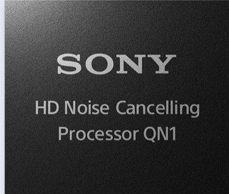

노이즈캔슬링(Noise Cancleing)
각 이어컵에 탑재된 2개의 마이크를 통해 구현되는 듀얼 노이즈 센서 기술로 소음을 감지해 HD 노이즈 캔슬링 프로세서 QN1으로 음성 신호를 전송하여 새로운 알고리즘을 탑재하여 보다 다양한 환경에서 실시간으로 노이즈 캔슬링 기능을 수행한다.
QN1
최신 블루투스 오디오 시스템 온 칩(System on Chip)과 함께 작동하여 1초당 약 700회 이상 다양한 노이즈를 실시간으로 감지하고 조정하여 극강의 노이즈 캔슬링 성능을 발휘함.

기압최적화
주변 환경 분석을 통해 성능을 더욱 향상.
주변소리제어
필요에 따라 주변 소음 수읍 정도를 설정이 가능.